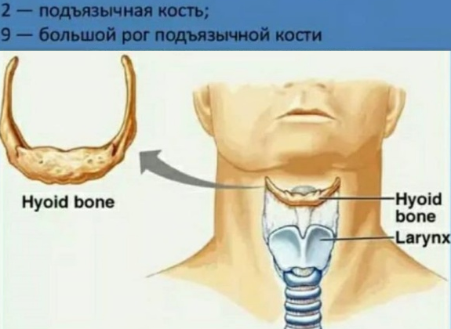

Сегодня будем учится глотать, это очень важно). Во время правильного глотания язык совершает мощный толчок сначала кончиком в переднюю часть неба, а потом средней частью (спинкой) в боковые части (хлыстообразное движение). Благодаря такой стимуляции и происходит наиболее активный горизонтальный рост максиллы - вперед, вверх и вширь. Чтобы обеспечить нужную силу воздействия на нёбо важно, чтобы голова находилась в физиологически правильном положении. Что это за положение?
Давайте проведем эксперимент: опустите голову вниз, смотрите в пол, и медленно начните смыкать зубы. Какие зубы первыми вошли в контакт? Резцы? А теперь отклоните голову назад, посмотрите наверх и в таком положении так же медленно сомкните зубы. Какие зубы соприкоснулись первыми? Скорее всего, моляры или премоляры, в общем, жевательные, так? Вывод: от наклона черепа зависит окклюзия, смыкание зубов. То есть, если зубы не смыкаются, как надо, голова стремится занять такое положение, чтобы это смыкание обеспечить.
Именно поэтому когда у нас не хватает высоты жевательных зубов наша голова компенсаторно вжимается в шею, откидываясь затылком назад, сначала это происходит при еде (чтобы нам было бы легче жевать и глотать - жизненно важные функции), а потом и в статике - мозг создает паттерн...
Конечно, тут может иметься проблема прикуса, стёртых зубов и т. п. , но, тем не менее, мы можем осознанно переучить неправильную функцию тем самым создав условия для здоровой структуры.
Чтобы понять, как правильно глотать с прижатым языком, хорош следующий прием: встаем или садимся ровно, макушкой вверх, подбородок чуть опущены к груди, вставляем нитку в пуговицу (чтобы не проглотить, можно и не вставлять), рукой держим нитку, а пуговицу кладем на спинку языка. Затем смыкаем зубы, прижимаем язык к нёбу вместе с пуговицей и начинаем глотать раз десять подряд. Задача в том, чтобы пуговица оставалась на месте, а лицо (смотрим в зеркало) не шевелилось никаким мускулом, кроме движения подъязычной кости.
Это многим будет трудно. Мы зачастую глотаем губами, щеками (привет мешочки или складки на щеках), затылком и вообще всем телом, но это неправильно.
Кажется невероятным, но считается, что в норме человек может глотнуть на сухую 100 (сто!) и более раз подряд в течение минуты!
Итак, ставим череп и шею в правильное положение и учимся в нем глотать:
1. Лучше всего встать к стене (можно сидя, я за рулем в пробках люблю это делать, упираясь затылком в подголовник), спина прямая, плечи расправлены, шея длинная, подбородок чуть вниз, направлен к груди, макушка тянется вверх, задняя поверхность шеи растянута. Подвигайте подбородком, растягивая заднюю поверхность шеи (упражнение Маккензи) .
2. Если есть сложности с вытяжением задней поверхности шеи и напряжением в подзатылочных мышцах (а это есть почти у всех) при любой возможности выполняем следующее упражнение, работающее по принципу постизометрической релаксации:
положение то же, что в предыдущем пункте (важно не поднимать нос вверх, а чуть опускать, прижимая подбородок). Например, стоим у стены в метро или сидим за рулем и на десять счетов давим затылком на стену/ спинку кресла/подголовник. Подавили - положили руки на затылок и под их весом (не давним!) опускаем голову к груди, растягивая мышцы шеи сзади. И так несколько подходов. Наклон головы при давлении на стену можно менять по ощущениям, расслабляя разные группы мышц.
4. Положение головы то же, макушкой вверх, мягко смыкаем зубы, прижимаем язык к нёбу и глотаем сто раз). Ощутите, насколько толчок в небо будет сильнее в этом положении!
1) Добавляем широкую улыбку при глотании — так будет проще прижимать язык и убрать ком в горле
2) Набираем в рот воды и глотаем мелкими глоточками, с водой будет легче. Мне как раз полного рта воды хватает примерно на сто глоточков. Для этой же цели можно держать во рту жвачку или леденец — тогда с усиленным слюноотделением глотать будет проще